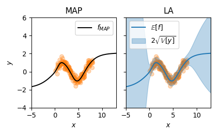
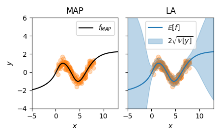

Example: Regression
Sinusoidal toy data#
We show how the marginal likelihood can be used after training a MAP network on a simple sinusoidal regression task.
Subsequently, we use the optimized LA to predict which provides uncertainty on top of the MAP prediction.
We also show how the marglik_training utility method can be used to jointly train the MAP and hyperparameters.
First, we set up the training data for the problem with observation noise \(\sigma=0.3\):
from laplace.baselaplace import FullLaplace
from laplace.curvature.backpack import BackPackGGN
import numpy as np
import torch
from laplace import Laplace, marglik_training
from helper.dataloaders import get_sinusoid_example
from helper.util import plot_regression
n_epochs = 1000
torch.manual_seed(711)
# sample toy data example
X_train, y_train, train_loader, X_test = get_sinusoid_example(sigma_noise=0.3)
Training a MAP#
We now use pytorch to train a neural network with single hidden layer and Tanh activation.
The trained neural network will be our MAP estimate.
This is standard so nothing new here, yet:
# create and train MAP model
def get_model():
torch.manual_seed(711)
return torch.nn.Sequential(
torch.nn.Linear(1, 50), torch.nn.Tanh(), torch.nn.Linear(50, 1)
)
model = get_model()
criterion = torch.nn.MSELoss()
optimizer = torch.optim.Adam(model.parameters(), lr=1e-2)
for i in range(n_epochs):
for X, y in train_loader:
optimizer.zero_grad()
loss = criterion(model(X), y)
loss.backward()
optimizer.step()
Fitting and optimizing the Laplace approximation using empirical Bayes#
With the MAP-trained model at hand, we can estimate the prior precision and observation noise
using empirical Bayes after training.
The Laplace method is called to construct a LA for "regression" with "all" weights.
As default Laplace returns a Kronecker factored LA, we use "full" instead on this small example.
We fit the LA to the training data and initialize log_prior and log_sigma.
Using Adam, we minimize the negative log marginal likelihood for n_epochs.
la = Laplace(model, "regression", subset_of_weights="all", hessian_structure="full")
la.fit(train_loader)
log_prior, log_sigma = torch.ones(1, requires_grad=True), torch.ones(1, requires_grad=True)
hyper_optimizer = torch.optim.Adam([log_prior, log_sigma], lr=1e-1)
for i in range(n_epochs):
hyper_optimizer.zero_grad()
neg_marglik = - la.log_marginal_likelihood(log_prior.exp(), log_sigma.exp())
neg_marglik.backward()
hyper_optimizer.step()
The obtained observation noise is close to the ground truth with a value of \(\sigma \approx 0.28\) without the need for any validation data. The resulting prior precision is \(\delta \approx 0.10\).
Bayesian predictive#
Here, we compare the MAP prediction to the obtained LA prediction. For LA, we have a closed-form predictive distribution on the output \(f\) which is a Gaussian \(\mathcal{N}(f(x;\theta\_{MAP}), \mathbb{V}[f] + \sigma^2)\):
x = X_test.flatten().cpu().numpy()
f_mu, f_var = la(X_test)
f_mu = f_mu.squeeze().detach().cpu().numpy()
f_sigma = f_var.squeeze().sqrt().cpu().numpy()
pred_std = np.sqrt(f_sigma**2 + la.sigma_noise.item()**2)
plot_regression(X_train, y_train, x, f_mu, pred_std)

In comparison to the MAP, the predictive shows useful uncertainties. When our MAP is over or underfit, the Laplace approximation cannot fix this anymore. In this case, joint optimization of MAP and marginal likelihood can be useful.
Jointly optimize MAP and hyperparameters using online empirical Bayes#
We provide a utility method marglik_training that implements the algorithm proposed in [1].
The method optimizes the neural network and the hyperparameters in an interleaved way
and returns an optimally regularized LA.
Below, we use this method and plot the corresponding predictive uncertainties again:
model = get_model()
la, model, margliks, losses = marglik_training(
model=model, train_loader=train_loader, likelihood="regression",
hessian_structure="full", backend=BackPackGGN, n_epochs=n_epochs,
optimizer_kwargs={"lr": 1e-2}, prior_structure="scalar"
)
f_mu, f_var = la(X_test)
f_mu = f_mu.squeeze().detach().cpu().numpy()
f_sigma = f_var.squeeze().sqrt().cpu().numpy()
pred_std = np.sqrt(f_sigma**2 + la.sigma_noise.item()**2)
plot_regression(X_train, y_train, x, f_mu, pred_std)
